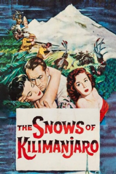
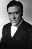

Country:United States, 117 minutes
Spoken languages:
Genres:Adventure, Romance
Director(s):Henry King
Writer(s):Casey Robinson, Ernest Hemingway
Video Codec:Unknown
Number: 1457


Certification:NR
Storyline:
Writer Harry Street reflects on his life as he lies dying from an infection while on safari in the shadow of Mount Kilimanjaro.
Cast: 
Medium: Original DVD,
Comments: Part of: Leading Ladies - Classic 20 Movie Collection
Loaned: No
Aspect ratio: Unknown